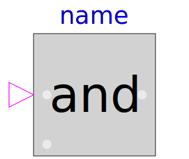
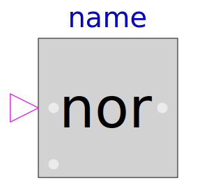
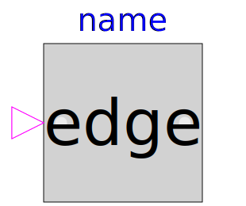
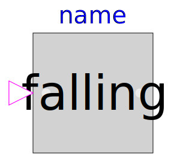
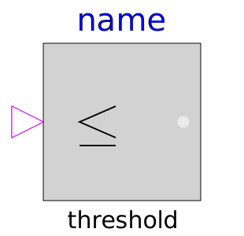
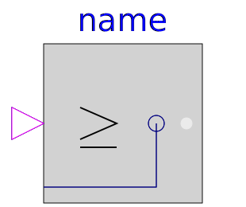
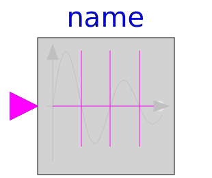
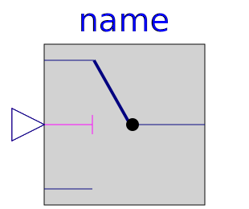
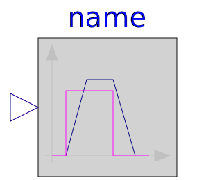

This package provides blocks with Boolean input and output signals to describe logical networks. A typical example for a logical network built with package Logical is shown in the next figure:

The actual value of Boolean input and/or output signals is displayed in the respective block icon as "circle", where "white" color means value false and "green" color means value true. These values are visualized in a diagram animation.
| Name | Description |
|---|---|
|  And | Logical 'and': y = u1 and u2 |
| Logical 'or': y = u1 or u2 | |
| Logical 'xor': y = u1 xor u2 | |
|  Nor | Logical 'nor': y = not (u1 or u2) |
| Logical 'nand': y = not (u1 and u2) | |
| Logical 'not': y = not u | |
| Breaks algebraic loops by an infinitesimal small time delay (y = pre(u): event iteration continues until u = pre(u)) | |
|  Edge | Output y is true, if the input u has a rising edge (y = edge(u)) |
|  FallingEdge | Output y is true, if the input u has a falling edge (y = edge(not u)) |
| Output y is true, if the input u has a rising or falling edge (y = change(u)) | |
| Output y is true, if input u is greater than threshold | |
| Output y is true, if input u is greater or equal than threshold | |
| Output y is true, if input u is less than threshold | |
|  LessEqualThreshold | Output y is true, if input u is less or equal than threshold |
| Output y is true, if input u1 is greater than input u2 | |
|  GreaterEqual | Output y is true, if input u1 is greater or equal than input u2 |
| Output y is true, if input u1 is less than input u2 | |
| Output y is true, if input u1 is less or equal than input u2 | |
|  ZeroCrossing | Trigger zero crossing of input u |
| Logical Switch | |
|  Switch | Switch between two Real signals |
| Transform Real to Boolean signal with Hysteresis | |
| On-off controller | |
|  TriggeredTrapezoid | Triggered trapezoid generator |
| Timer measuring the time from the time instant where the Boolean input became true | |
| A basic RS Flip Flop | |
| Terminate simulation if condition is fulfilled |